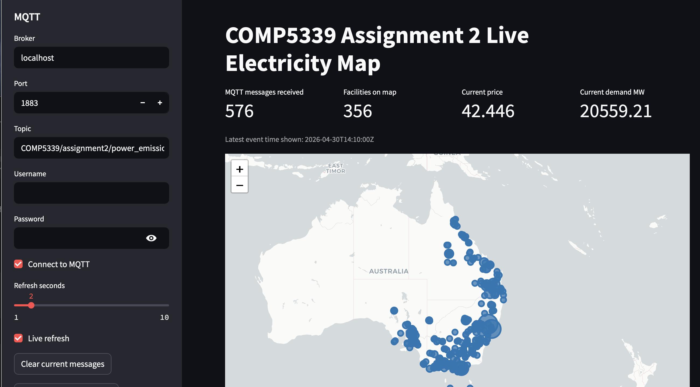

Replaying the Grid.
How can a map show a week of electricity generation and emissions as the readings arrive?
For a COMP5339 group assignment, I built the pipeline and map end to end. I retrieved a recorded week from Australia’s National Electricity Market, cleaned the readings, joined them with facility locations in DuckDB, and replayed them through MQTT into a map.
Try a 30-second replayINTERACTIVE DEMO
Watch the grid change
Replay one hour of historical readings from seven Australian electricity facilities. Pick a site on the map to follow its output.
SELECTED FACILITY
Eraring
- Generation
- Emissions
Larger dots show higher readings. A hollow dot shows zero.
Ready to play
This browser demo uses a one-hour sample from the project’s historical data. The full project used DuckDB and MQTT to replay a week. Readings and facility locations come from Open Electricity (Superpower Institute), licensed under CC BY-NC 4.0. Map outline from Natural Earth.

01 / MY WORK
Give each reading a place and time
I retrieved five-minute generation and emissions readings from OpenElectricity, normalised the timestamps to UTC, and summed unit readings at each facility. I saved the cleaned data to CSV so I could repeat the demo without calling the API each time.
I used DuckDB to connect the cleaned five-minute readings to the facility and location data from our first assignment. Facility names did not always match across sources. The join used a facility match first, then OpenElectricity’s facility coordinates, then a regional fallback. I included the coordinate source in the MQTT message so the map could show how each location was assigned.
I defined the MQTT topic and the JSON message format, including the facility, event timestamp, power output, emissions and location. The publisher sorted the records by event time before sending them to the map.
02 / DESIGN DECISION
Make a week of data possible to demo
At a delay of 0.1 seconds per record, replaying the full week would take about 20 hours before any skips or pauses. I made the publisher send batches of up to 3,000 records in chronological order, pause between batches and skip readings when a facility’s power and emissions values were unchanged.
That let me demonstrate the map updating from the first batch and leave the replay running to process subsequent batches. I documented how to start the local broker and run the publisher and dashboard.
03 / RESULTS
From stored records to a map that updates
- Cleaned records
- 716,454
- Facilities
- 356
- Five-minute intervals
- 2,016
The prepared dataset covered seven days. I built the Streamlit and Folium dashboard to subscribe to the replay and retain the latest message for each facility. The map let viewers switch between power output and emissions, filter by region or fuel type, and inspect individual facility readings.